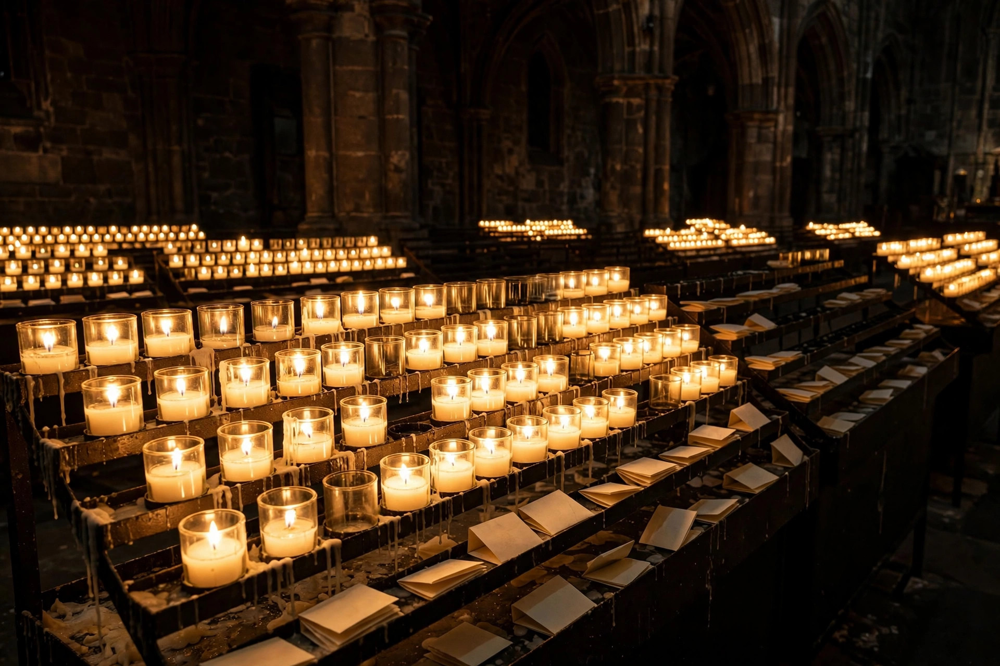
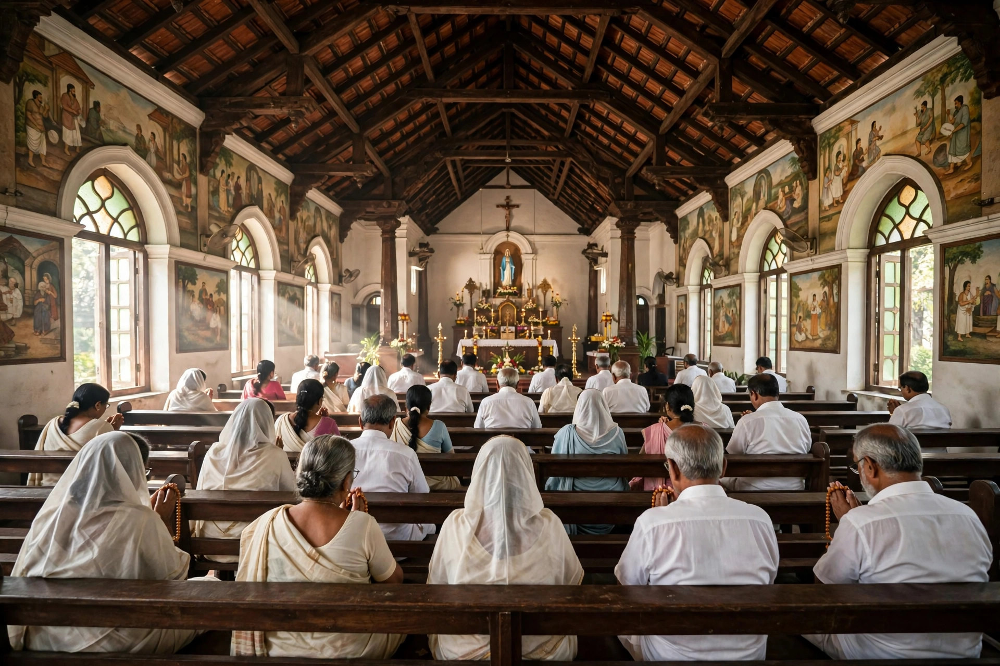

Scroll
Whether you are a parishioner, a pilgrim passing through Idukki, or simply seeking a quiet moment with God — you are welcome here. Join us for Holy Mass, light a candle at the grotto of Our Lady, and be part of our parish family.
Established on 26 October 1935, Lourde Matha Church stands on the Kolapra–Thalayanadu Road in the heart of Idukki district. For over ninety years, this parish has been the spiritual home of the Catholic families of Thalayanadu — a place where faith is handed down from generation to generation.
Under the loving patronage of Our Lady of Lourdes, the parish gathers daily for Holy Mass and prayer, celebrates the sacraments of Christian life, and reaches out in charity to all.
All are welcome. The church is open every day from 6:00 AM to 8:00 PM for personal prayer.
Timings may vary on feast days and special occasions — please confirm with the parish office.
Open daily for prayer and visits
6:00 AM – 8:00 PM
The sacrament of reconciliation is available before Holy Mass, or anytime by approaching the parish priest.
For Mass intentions, certificates, baptisms and marriages, call
+91 4862 258 257
One parish, many ways to grow in faith and serve one another.
Daily and Sunday Holy Mass at the heart of parish life, with First Friday adoration and Eucharistic devotion.
Baptism, First Holy Communion, Confirmation and Marriage — celebrated with preparation and joy.
Sunday faith formation for children and youth, nurturing the next generation of the parish.
Voices raised in praise — the parish choir and altar servers beautify every celebration.
Legion of Mary, rosary groups and family prayer units keeping the flame of devotion alive.
Youth fellowship, women's associations and charitable outreach serving the wider community.
Glimpses of faith, feast and fellowship at Lourde Matha Church.





Share your parish photos with the church office to be featured here.
The doors of Lourde Matha Church are open every day. Join us for Holy Mass, spend a quiet moment before the Blessed Sacrament, or simply light a candle for someone you love.